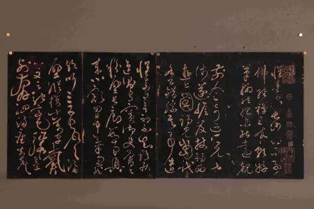

民国滕白也藏《怀素帖》碑拓册页
访问原网页 ↗Visit original website ↗

S030 · 庐山博物馆 · 民国；网页未署日期
提供其旧藏碑拓的馆方图像，属于收藏史资料。Museum image of an album formerly collected by Teng. It documents collecting, not a work created by him.
馆藏图像与原文Archived images and documents

来源页摘录Source-page excerpt
民国滕白也藏《怀素帖》碑拓册页-文物精品--庐山博物馆
您现在的位置：首页 >> 藏品欣赏 >> 文物精品 民国滕白也藏《怀素帖》碑拓册页
原始网址Original URL
https://www.lushanmuseum.cn/jingpin_info.asp?id=2506